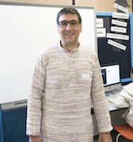
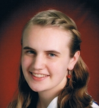
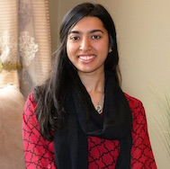
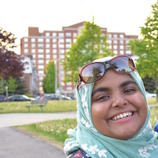
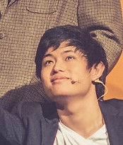
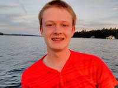
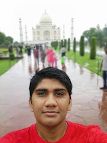
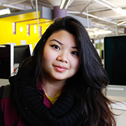
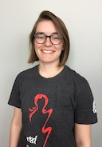
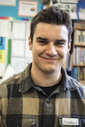

ASK US QUESTIONS?
MCMASTER UNIVERSITY COMPUTING AND SOFTWARE OUTREACH
The Professor
Dr. Christopher Anand
anandc@mcmaster.ca
Associate Professor in the Department of Computing and Software at McMaster University.
He likes to ride his bicycle around while dividing and conquering everything else in the world.
Outreach Instructors
Email the instructors with any questions concerns or even just to chat!
Levin Noronha
noronl@mcmaster.ca
Hi, my name is Levin. I am a Computer Science student at McMaster University, and I am currently in my third year. In my spare time, I like reading
novels, jogging, and writing code. My favourite fruits are watermelon and mango. I decided to join Computer
Science because I enjoyed solving puzzles and finding the shortest solution to problems. So far
in computer science, I have enjoyed creating games and mobile apps. I'm also maintaining this website.
Tanya Bouman
 boumante@mcmaster.ca
I am currently in my third year of studying Computer Science.
I like to play the organ and use computers to do cool physics stuff.
Rumsha Siddiqui
 siddiqur@mcmaster.ca
Hi! I'm in my second year of computer science at McMaster University. I am currently the Computer Science Rep. for McMaster's Women in Engineering Society, and VP Communications of the Computer Science Society. I love spending my free time hacking away at code, staying up late and eating lots of ice cream (not necessarily all at the same time)! I also love fencing (the sport), planning events, and helping out wherever I can! Feel free to send me an email!
Madeeha Khan
 khanm57@mcmaster.ca
Hi, my name is Madeeha! I'm in my second year of Computer Science. I like watching TV and going to really pretty places. I switched programs to be in Comp Sci because I love making things and solving puzzles.
Ray Winardi
 winardir@mcmaster.ca
Hey, you've reached Ray! I'm a second year Computer Science student who loves programming, musicals, singing, staying awake for days and teaching kids how to code. Ask me any and all questions, I don't bite (in daylight).
Chris Schankula
 schankuc@mcmaster.ca
Hey! My name is Chris. I am in second year in the Software Engineering and Society program here at Mac! I love Software and Computer Science because although I’m pretty terrible at drawing and painting, I can create new, amazing things just by typing out code. And that’s really cool! I’m also very passionate about learning new things and teaching others what I know. I like to create cool programs for my friends and family to use, and I’m learning about building and programming electronics using Raspberry Pi and Arduino kits. I also love biking, swimming, hiking and keeping up with my favourite TV shows. Well, trying to keep up! A few that come to mind are The Walking Dead, Stargate and Dark Matter. Don’t hesitate to email me if you have any questions or just want to chat! :)
Vasav Shah
 shahv10@mcmaster.ca
Hey! My name is Vasav and I'm in second year here at Mac studying electrical and biomedical engineering! I also love to write code and learn about programming every day! I started learning programming when I was in grade 10, my only regret is not starting earlier like most of you! I love comp sci because it's all about solving problems everyone has. I also love to play tennis and visiting new places! If you ever need help send me a message and I'll gladly help you!
Alyssia Jovellanos
jovella@mcmaster.ca
Hey there! My name is Alyssia and I'm in second year computer science at McMaster University. I
could probably describe myself accurately as a corny, enthusiastic nerd. I love
entrepreneurship, anything and everything that have to do with hackathons, The Last of Us, youth
empowerment, chocolate, and connecting with people. At McMasterU, I'm the current President of
the McMaster Computer Science Society and Organizer of McMaster's annual hackathon: deltaHacks.
#IAlsoCreatedThisWebsite
Alumni
Jenell Hogg

Hi, I'm Jenell, and I graduated from McMaster University's Software Engineering program. I like programming.
Prakhar Jalan
Hi, I'm majoring in Computer Science. I've always
been interested in technology and building creative things, which is exactly what computer
science offers me. The fact that you can craft what comes to your mind through programming makes
it endlessly interesting.
Aside from my hobby of playing music, enjoying myself on computers has always been an important
part of my day. I hope that I can keep learning
what I can in this field, as well as inspire those hesitant to drive down this road.
Jin Lee
Hey guys! I'm majoring in Computer Science at McMaster University just like
most of the instructors here. I love video games [any and all], sports [I do martial arts and
stunts], and photography [You can check me out at JinSung Lee Photography (LeeJin)
]. I like computer science because I want to basically create programs (or robots) to
take over the world one day... One day. >:) #ICreatedThisWebsite
Jonathan Boulanger

Hey guys, my name is Jonathan! I study
computer science at McMaster
University with all of the other instructors. I like skiing and chocolate ice cream. I like
pets, I have 3 dogs! I took computer science because I've seen how much easier computers make
our life, and I want to be a part of that. I look forward to seeing all of you!
Helen Brown
I graduated from Software Engineering at McMaster University, and also completed my
Masters in Computer Science. I love painting, piano, board games, and doing lunchtime crossword
puzzles.